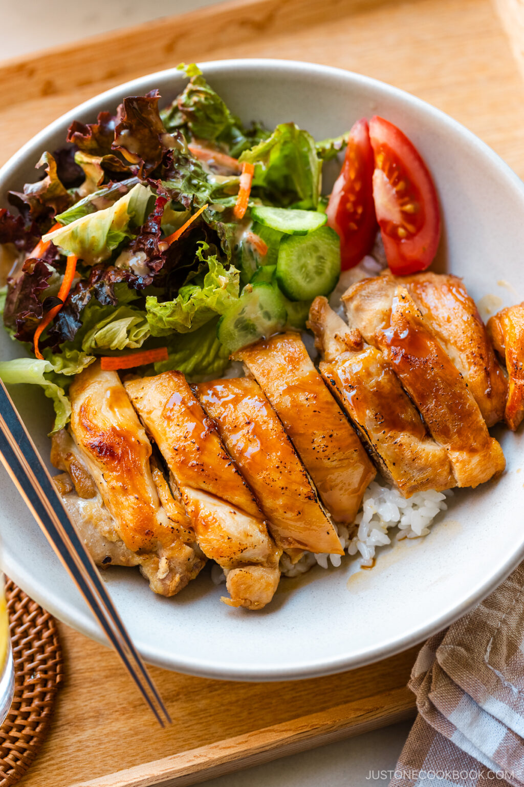
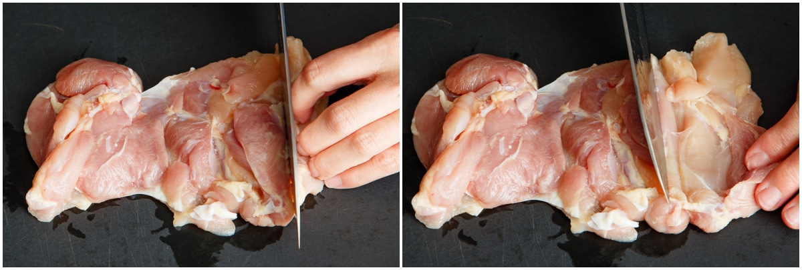
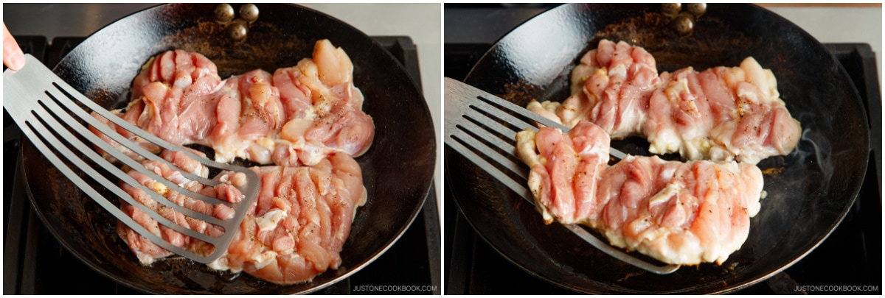
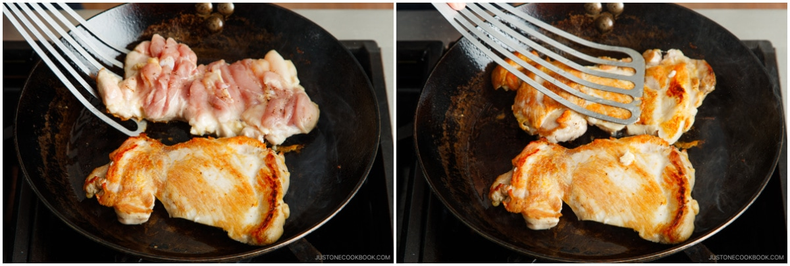
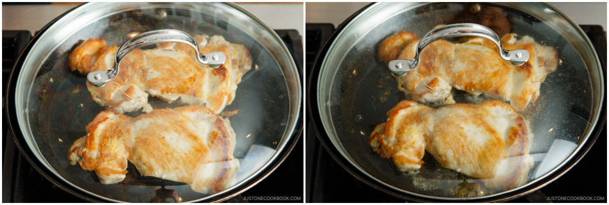
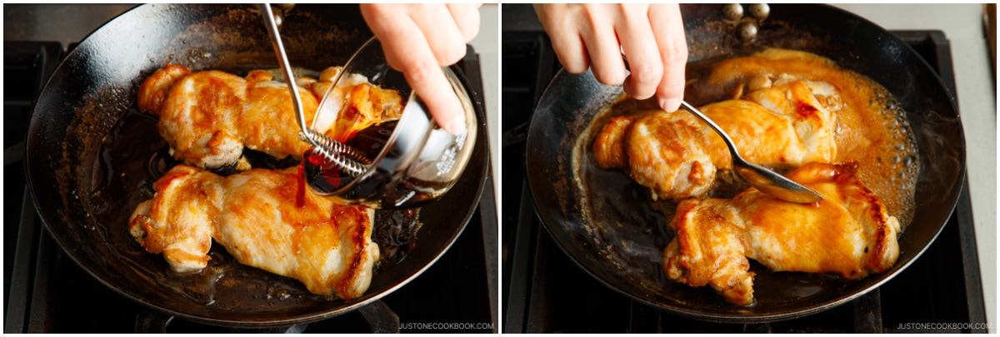
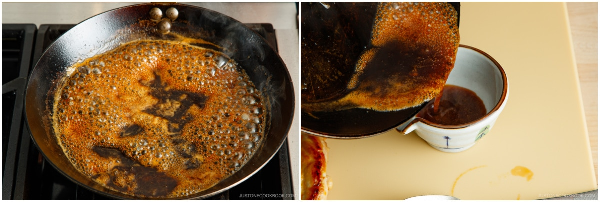
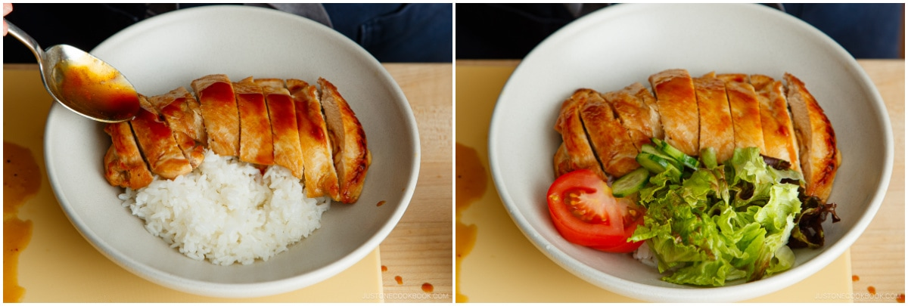

Chicken Teriyaki

Description
Learn how to cook classic Chicken Teriyaki at home in less than 20 minutes using authentic Japanese cooking methods. You'll love the seared and juicy chicken thighs glazed in an easy and flavorful homemade sauce. No bottled teriyaki sauce needed!
Ingredients
- ¾-1 lb boneless, skinless chicken thighs
- ⅛ tsp Diamond Crystal kosher salt
- ⅛ tsp freshly ground black pepper
- 1 Tbsp neutral oil
- 1 portion teriyaki sauce
Steps
- If you haven't done already, make your teriyaki sauce.
- Place chicken thighs smooth side down on a cutting board. Now, use the scoring method to create an even thickness so the thighs cook evenly. First, cut slits across the meat every ½ inch (1.3 cm) without slicing all the way through.

- Make deeper slits on the chicken's thick parts and skip scoring the thin parts. After each cut, press open and flatten the meat with your fingers. In the below images, you can see how I scored (left) and flattened (right) one piece. Once you finish scoring, check again to make sure the thigh has an even thickness. Repeat with the rest of the thighs.
- Lightly season the chicken pieces with ⅛ tsp Diamond Crystal kosher salt and ⅛ tsp freshly ground black pepper.
- Heat a large frying pan over medium to medium-high heat. When the pan is hot, add 1 Tbsp neutral oil. When the oil is hot, place the chicken smooth side down in the pan.
- Cook the chicken for 5 minutes (set a timer). Immediately, press down hard on the chicken with a spatula for 5-10 seconds to give the presentation side a nice sear. The right image below shows what the chicken looks like after 5 minutes of cooking; please adjust the time based on your stove and cookware.

- Flip over the chicken. Immediately press it down again with the spatula for 5-10 seconds.

- Switch to low heat, then cover with a lid and steam the chicken for 3 minutes.

- Open the lid. Use a paper towel to wipe the excess grease and protein from the pan. This helps create a more transparent sauce.
- Now, increase the stove's heat to medium and add the teriyaki sauce to the pan. Tilt the pan and frequently spoon the sauce over the chicken.

- When the chicken is well coated with the sauce and cooked through, transfer it to a cutting board.
- When the sauce is thick enough, transfer it to a bowl. Remember to stop cooking while the sauce is slightly thin because the residual heat will continue to thicken the sauce. If you'd like it thicker, reduce the sauce for 2-3 more minutes.

- Serve on a plate with the sauce drizzled on top. You can also serve it over steamed rice with the sauce drizzled on top, as I did here. I also served green salad and tomato wedges on the side.
